PKbioanalysis overview
Omar Elashkar
Source:vignettes/PKbioanalysis_overview.Rmd
PKbioanalysis_overview.RmdPlate generation, reusing and managing plates
plate <- generate_96()
plot(plate)
#> Plate not registered. To register, use register_plate()
#> Warning: Removed 96 rows containing missing values or values outside the scale range
#> (`geom_text()`).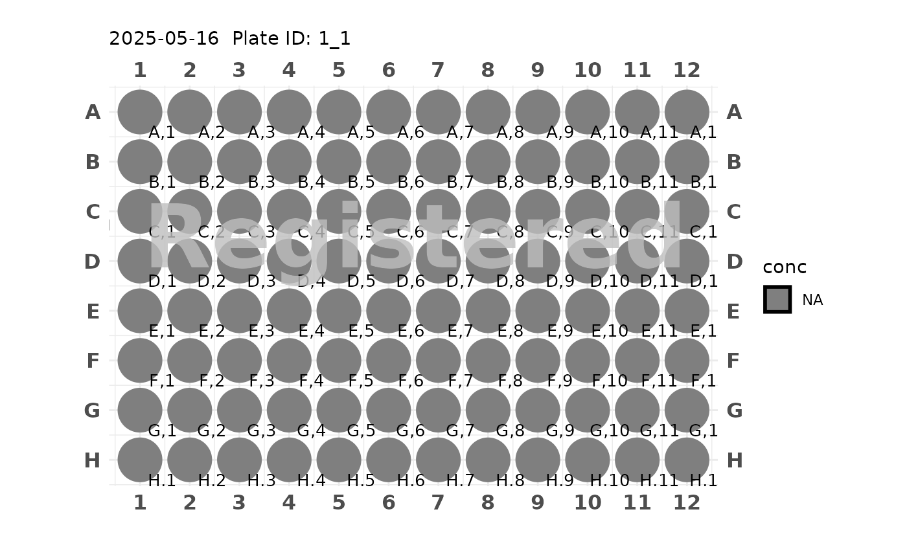
Calibration study examples
plate <- generate_96("Calibration study") |>
add_cs_curve(c(1, 3, 5, 10, 20, 50, 100, 200, 500)) |>
add_DB() |>
add_DB() |>
add_blank() |> # CS0IS1
add_suitability(conc = 20) |>
add_QC(2, 200 ,400, qc_serial = FALSE) |>
add_DB() |>
add_blank(analyte = TRUE, IS = FALSE) |> # CS1IS0
add_cs_curve(c(1, 3, 5, 10, 20, 50, 100, 200, 500)) |>
add_QC(2, 180 , 400)
plot(plate)
#> Plate not registered. To register, use register_plate()
#> Warning: Removed 48 rows containing missing values or values outside the scale range
#> (`geom_text()`).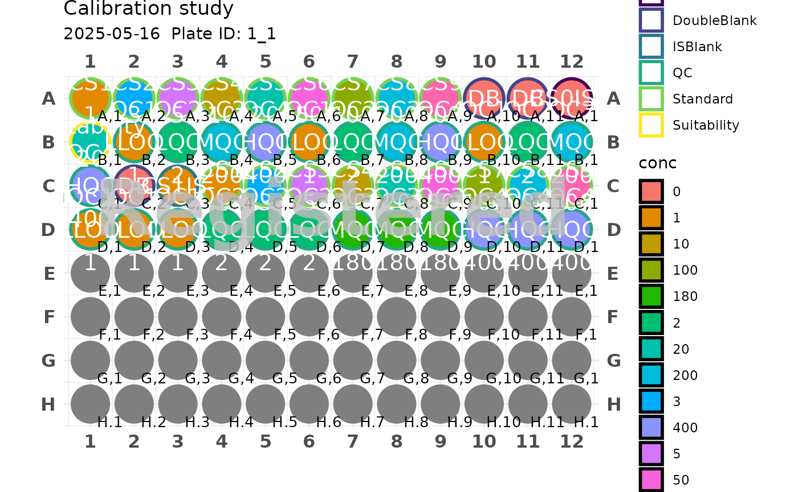
plate <- register_plate(plate)
plot(plate)
plate <- generate_96() |>
add_suitability(conc = 10) |>
make_calibration_study(
plate_std = c(1, 3, 5, 10, 20, 50, 100, 200, 500),
lqc_conc = 2,
mqc_conc = 40,
hqc_conc = 100,
n_qc = 4,
qc_serial = TRUE,
n_CS0IS0 = 2,
n_CS1IS0 = 2,
n_CS0IS1 = 2)
plot(plate, color = "conc")
plate <- register_plate(plate)Adding samples
plate <- generate_96() |> add_samples(1:20)
plot(plate)
#> Plate not registered. To register, use register_plate()
#> Warning: Removed 76 rows containing missing values or values outside the scale range
#> (`geom_text()`).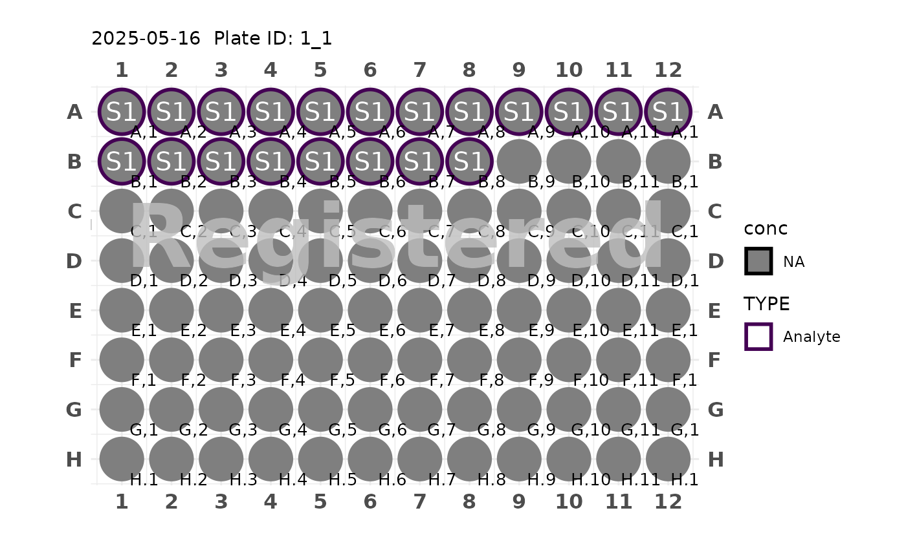
Adding samples manually or from external spreadsheet
plate <- generate_96()
plate <- plate |>
add_samples("sample1") |>
add_samples("sample2") |>
add_samples("sample3")
plot(plate)
#> Plate not registered. To register, use register_plate()
#> Warning: Removed 93 rows containing missing values or values outside the scale range
#> (`geom_text()`).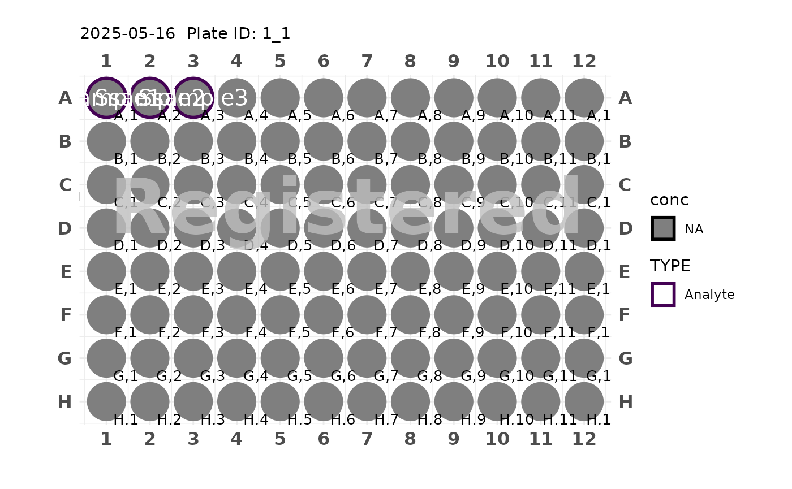
Define samples by attributes
In this example, will will pass pharmacokinetic data to
add_samples(). In this case, we don’t need to repeat time
for each sample, hence we set vtime = TRUE.
data(Indometh)
plate <- generate_96() |>
add_samples(samples = Indometh$Subject,
time = Indometh$time, vtime = TRUE)
plot(plate, color = "time")
#> Plate not registered. To register, use register_plate()
#> Warning: Removed 30 rows containing missing values or values outside the scale range
#> (`geom_text()`).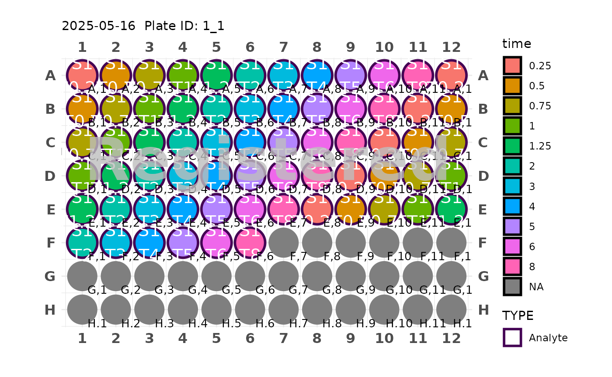
plot(plate, color = "samples")
#> Plate not registered. To register, use register_plate()
#> Warning: Removed 30 rows containing missing values or values outside the scale range
#> (`geom_text()`).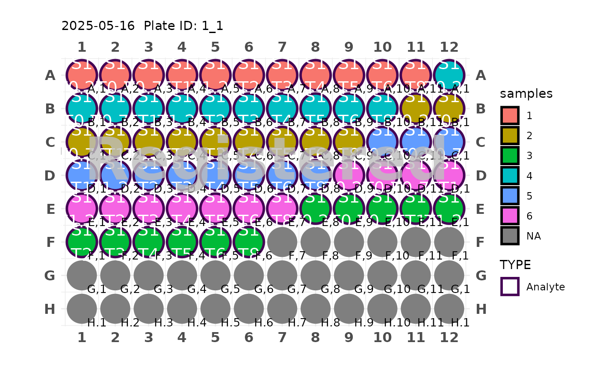
Time propagated automatically for each subject.
plate <- generate_96() |>
# add_samples_c(c("subject1", "subject2"), time = c(0, 10, 30, 60, 120), factor = "Male") |>
add_samples("subject1", time = c(0, 10, 30, 60, 120),
factor = "Male") |>
add_samples("subject2", time = c(0, 10, 30, 120),
factor = "Female")
plot(plate, color = "time")
#> Plate not registered. To register, use register_plate()
#> Warning: Removed 87 rows containing missing values or values outside the scale range
#> (`geom_text()`).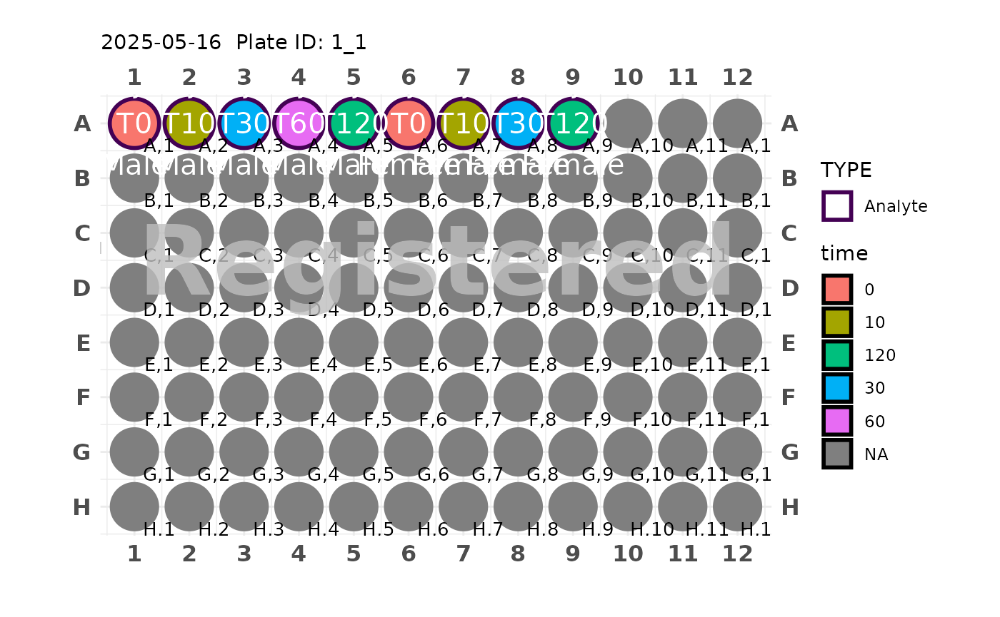
plot(plate, color = "samples")
#> Plate not registered. To register, use register_plate()
#> Warning: Removed 87 rows containing missing values or values outside the scale range
#> (`geom_text()`).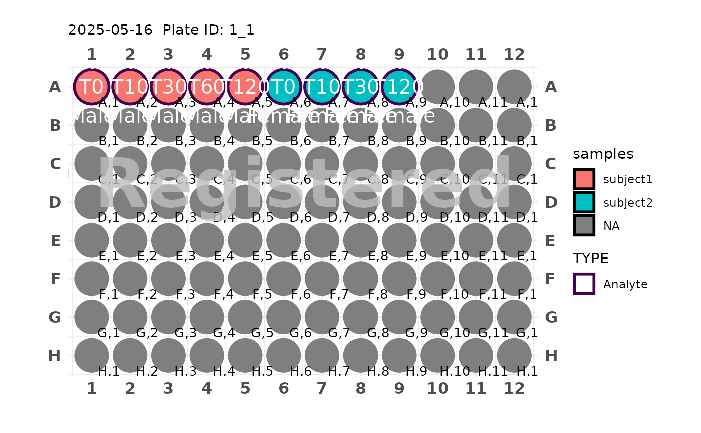
plot(plate, color = "factor")
#> Plate not registered. To register, use register_plate()
#> Warning: Removed 87 rows containing missing values or values outside the scale range
#> (`geom_text()`).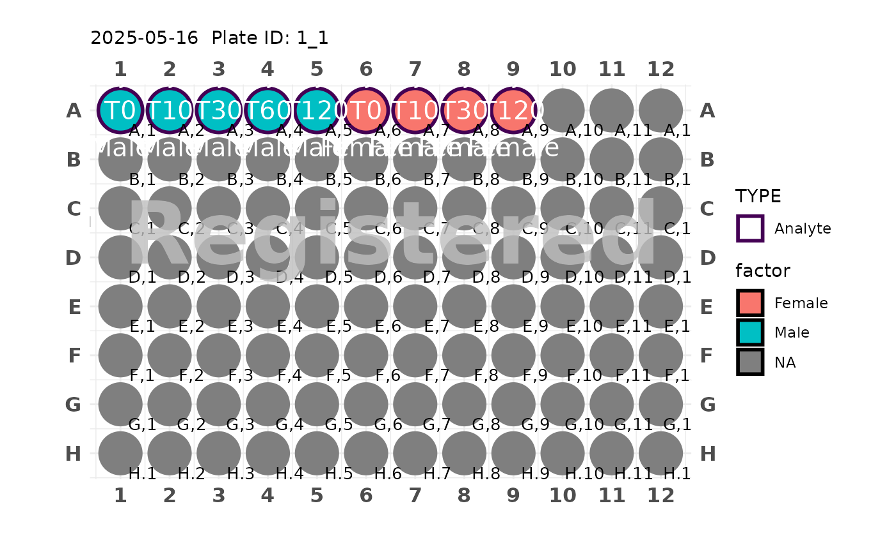
plot(plate, color = "conc")
#> Plate not registered. To register, use register_plate()
#> Warning: Removed 87 rows containing missing values or values outside the scale range
#> (`geom_text()`).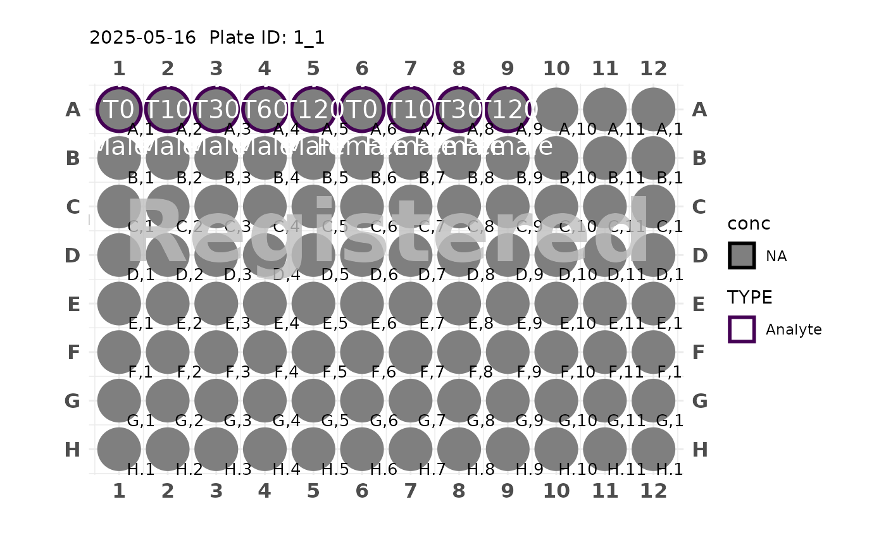
Cross-over Food Effect Example
If you have a cross-over study, you can use
add_samples_c() to create the full design quickly. Here
samples are not uniquely defined, but you can use prefix to prepend the
sample name.
plate <- generate_96() |>
add_samples_c(4, time = c(0, 10, 30, 60, 120),
factor = c("Fed", "Fast"), prefix = "subject")
plot(plate, color = "time")
#> Plate not registered. To register, use register_plate()
#> Warning: Removed 56 rows containing missing values or values outside the scale range
#> (`geom_text()`).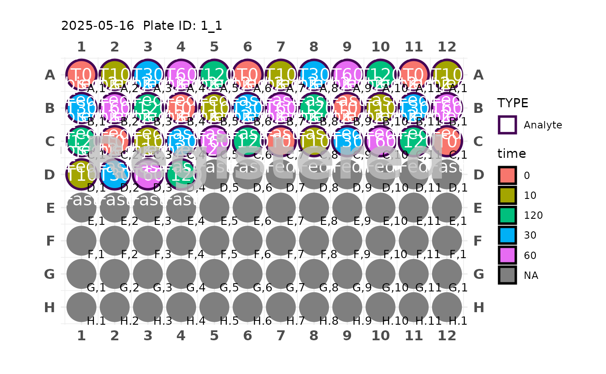
plot(plate, color = "samples")
#> Plate not registered. To register, use register_plate()
#> Warning: Removed 56 rows containing missing values or values outside the scale range
#> (`geom_text()`).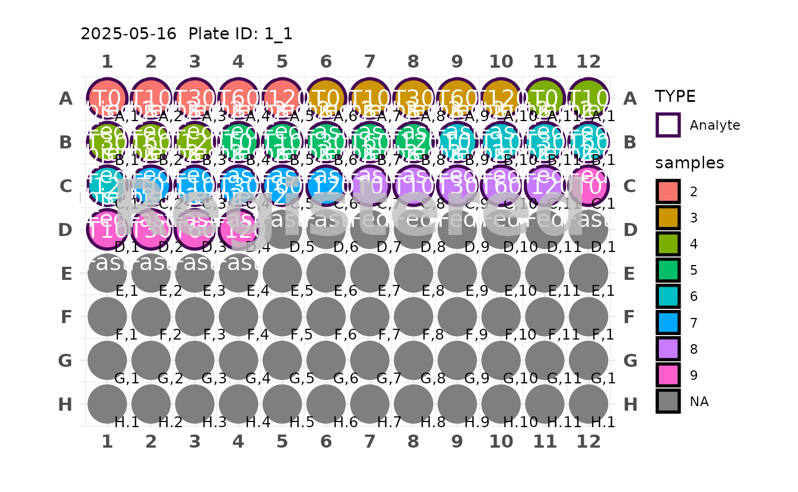
plot(plate, color = "factor")
#> Plate not registered. To register, use register_plate()
#> Warning: Removed 56 rows containing missing values or values outside the scale range
#> (`geom_text()`).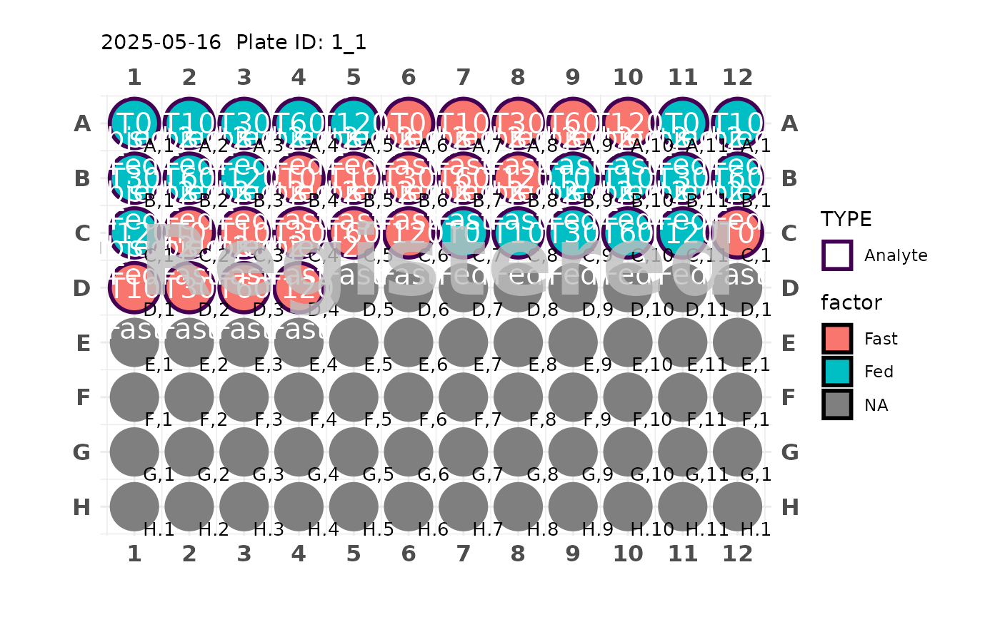
plot(plate, color = "conc")
#> Plate not registered. To register, use register_plate()
#> Warning: Removed 56 rows containing missing values or values outside the scale range
#> (`geom_text()`).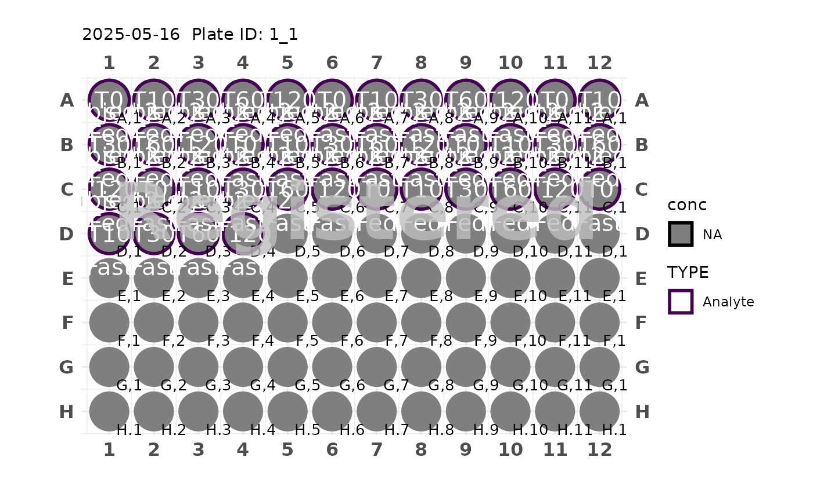
Metabolic study (Multiple plates)
plates <- make_metabolic_study(
cmpd = c("NE", "DA", "5HT", "HVA",
"DOPAC", "MHPG", "5HIAA", "VMA"),
time_points = c(0, 5, 10, 15, 30, 45, 60, 90, 120),
n_NAD = 3,
n_noNAD = 2
)
#> Warning in max(x): no non-missing arguments to max; returning -Inf
length(plates)
#> [1] 7
plot(plates[[1]], color = "samples", label_size = 9)
#> Plate not registered. To register, use register_plate()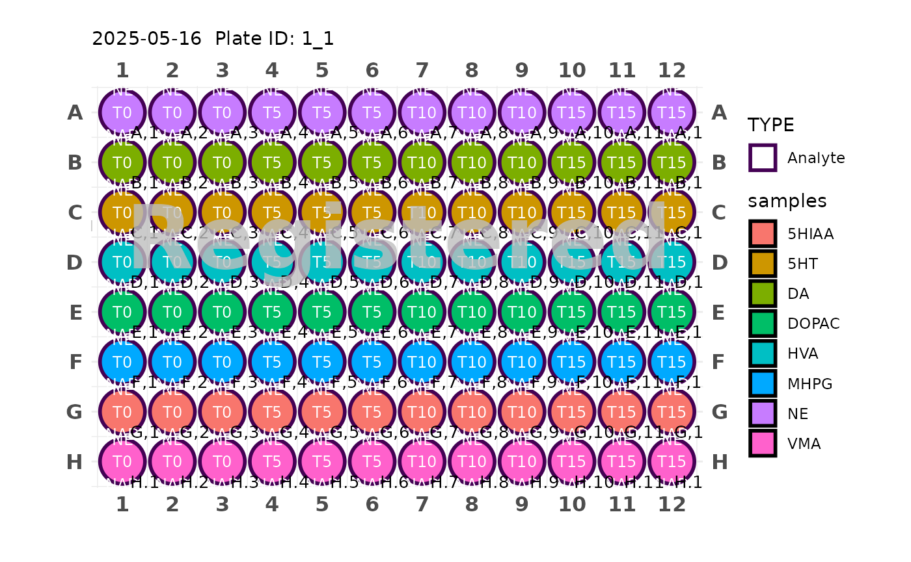
plot(plates[[2]], color = "samples", label_size = 9)
#> Plate not registered. To register, use register_plate()
plot(plates[[3]], color = "samples", label_size = 9)
#> Plate not registered. To register, use register_plate()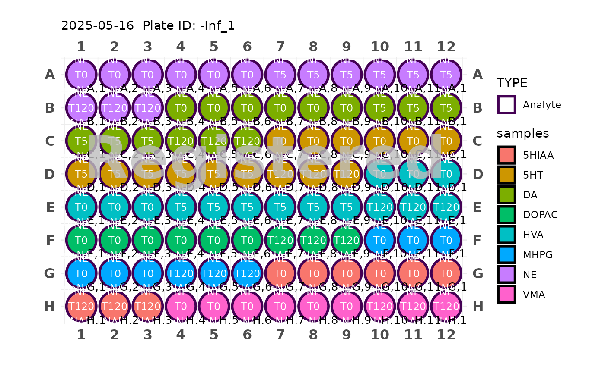
plot(plates[[4]], color = "samples", label_size = 9)
#> Plate not registered. To register, use register_plate()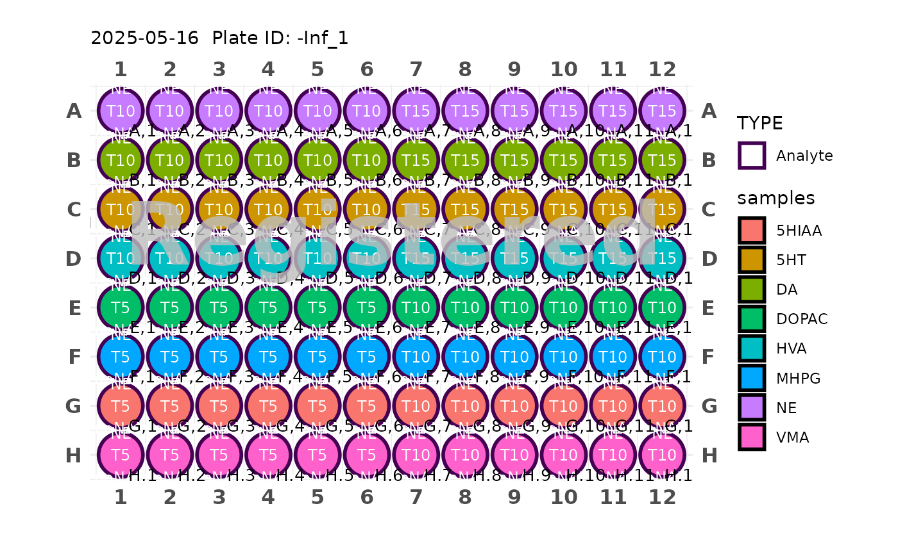
plot(plates[[5]], color = "samples", label_size = 9)
#> Plate not registered. To register, use register_plate()
plot(plates[[6]], color = "samples", label_size = 9)
#> Plate not registered. To register, use register_plate()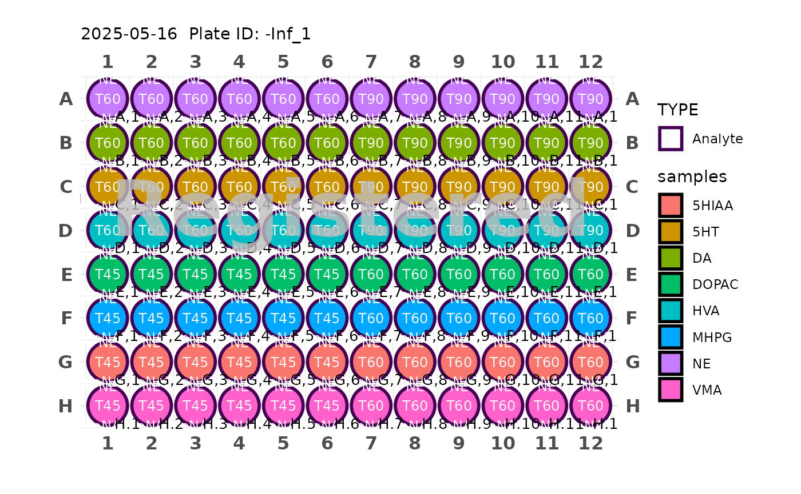
register_plate(plates)